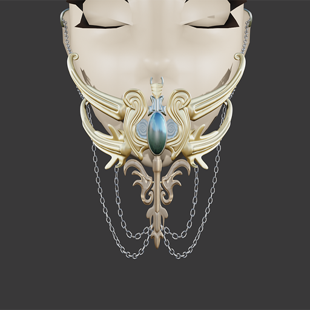

ABOUT ME
I am a Licensed Professional Teacher with a degree in Bachelor in Elementary Education. However, I have never practiced the profession.
During the pandemic, I have found a new hobby which is 3D modelling using the open-source application Blender. Some of my works are showcased below.
